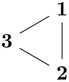

The TikZ and PGF Packages
Manual for version 3.1.10
Graph Drawing
32 Graph Drawing Algorithms: Force-Based Methods¶
by Till Tantau and Jannis Pohlmann
-
Graph Drawing Library force ¶
-
• “Forces” pull and push at the nodes in different directions.
-
• The effect of these forces is simulated by iteratively moving all the nodes simultaneously a little in the direction of the forces and by then recalculating the forces.
-
• The iteration is stopped either after a certain number of iterations or when a global energy minimum is reached (a very scientific way of saying that nothing happens anymore).
-
• If the nodes are connected by an edge, one can treat the edge as a “spring” that has a “natural spring dimension”. If the nodes are nearer than the spring dimension, they are push apart; if they are farther aways than the spring dimension, they are pulled together.
-
• If two nodes are connected by a path of a certain length, the nodes may “wish to be at a distance proportional to the path length”. If they are nearer, they are pushed apart; if they are farther, they are pulled together. (This is obviously a generalization of the previous idea.)
-
• There may be a general force field that pushes nodes apart (an electrical field), so that nodes do not tend to “cluster”.
-
• There may be a general force field that pulls nodes together (a gravitational field), so that nodes are not too loosely scattered.
-
• There may be highly nonlinear forces depending on the distance of nodes, so that nodes very near to each get pushed apart strongly, but the effect wears of rapidly at a distance. (Such forces are known as strong nuclear forces.)
-
• There rotational forces caused by the angles between the edges leaving a node. Such forces try to create a perfect angular resolution (a very scientific way of saying that all angles at a node are equal).
-
• Y. Hu. Efficient, high-quality force-directed graph drawing. The Mathematica Journal, 2006.
-
• C. Walshaw. A multilevel algorithm for force-directed graph drawing. In J. Marks, editor, Graph Drawing, Lecture Notes in Computer Science, 1984:31–55, 2001.
-
• Jannis Pohlmann, Configurable Graph Drawing Algorithms for the TikZ Graphics Description Language, Diploma Thesis, Institute of Theoretical Computer Science, Universität zu Lübeck, 2011.
Online at http://www.tcs.uni-luebeck.de/downloads/papers/2011/
2011-configurable-graph-drawing-algorithms-jannis-pohlmann.pdf
\usegdlibrary{force} %
LaTeX
and plain
TeX
\usegdlibrary[force] % ConTeXt
Nature creates beautiful graph layouts all the time. Consider a spider’s web: Nodes are connected by edges in a visually most pleasing manner (if you ignore the spider in the middle). The layout of a spider’s web is created just by the physical forces exerted by the threads. The idea behind force-based graph drawing algorithms is to mimic nature: We treat edges as threads that exert forces and simulate into which configuration the whole graph is “pulled” by these forces.
When you start thinking about for a moment, it turns out that there are endless variations of the force model. All of these models have the following in common, however:
The main difference between the different force-based approaches is how the forces are determined. Here are some ideas what could cause a force to be exerted between two nodes (and there are more):
Force-based algorithms combine one or more of the above ideas into a single algorithm that uses “good” formulas for computing the forces.
Currently, three algorithms are implemented in this library, two of which are from the first of the following paper, while the third is from the third paper:
Our implementation is described in detail in the following diploma thesis:
In the future, I hope that most, if not all, of the force-based algorithms become “just configuration options” of a general force-based algorithm similar to the way the modular Sugiyama method is implemented in the layered graph drawing library.
32.1 Controlling and Configuring Force-Based Algorithms¶
All force-based algorithms are based on a general pattern which we detail in the following. Numerous options can be used to influence the behavior of this general pattern; more specific options that apply only to individual algorithms are explained along with these algorithms.
The vertices are initially laid out in a random configuration. Then the configuration is annealed to find a configuration of minimal energy. To avoid getting stuck in a local minimum or at a saddle point, random forces are added. All of this makes the final layout extremely susceptible to changes in the random numbers. To achieve a certain stability of the results, you should fix the random seed. However, in the recent past Lua has switched its random number generator, which means that you won’t get the same sequence of random numbers as in a previous version, even for identical seed. If you rely on the long-term stability of vertex placement, you should consider using a different layout. With the spring layout you have to assume that the layout will be random.
32.1.1 Start Configuration¶
Currently, the start configuration for force-based algorithms is a random distribution of the vertices. You can influence it by changing the random seed:
\usetikzlibrary {graphs,graphdrawing} \usegdlibrary {force}
\tikz \graph [random seed=10, spring layout] {
a
--
{b, c, d} --
e
--
f
--
{g,h} --
{a,b,e};
};
\usetikzlibrary {graphs,graphdrawing} \usegdlibrary {force}
\tikz \graph [random seed=11, spring layout] {
a
--
{b, c, d} --
e
--
f
--
{g,h} --
{a,b,e};
};
Other methods, like a planar preembedding, are not implemented currently.
32.1.2 The Iterative Process and Cooling¶
-
/graph drawing/iterations=⟨number⟩(initially 500) ¶
Limits the number of iterations of algorithms for force-based layouts to ⟨number⟩. Depending on the characteristics of the input graph and the parameters chosen for the algorithm, minimizing the system energy may require many iterations.
In these situations it may come in handy to limit the number of iterations. This feature can also be useful to draw the same graph after different iterations and thereby demonstrate how the spring or spring-electrical algorithm improves the drawing step by step.
The examples shows two drawings generated using two different iteration limits.
Examples
\tikz \graph [spring layout, iterations=10] { subgraph
K_n
[n=4] };
\tikz \graph [spring layout, iterations=500] { subgraph
K_n
[n=4] };
\tikz \graph [spring electrical layout, iterations=10]
{ subgraph
K_n
[n=4] };
\tikz \graph [spring electrical layout, iterations=500]
{ subgraph
K_n
[n=4] };
-
/graph drawing/initial step length=⟨length⟩(initially 0) ¶
This parameter specifies the amount by which nodes will be displaced in each iteration, initially. If set to 0 (which is the default), an appropriate value is computed automatically.
-
/graph drawing/cooling factor=⟨number⟩(initially 0.95) ¶
This parameter helps in controlling how layouts evolve over time. It is used to gradually reduce the step size between one iteration to the next. A small positive cooling factor \(\ge 0\) means that the movement of nodes is quickly or abruptly reduced, while a large cooling factor \(\le 1\) allows for a smoother step by step layout refinement at the cost of more iterations. The following example demonstrates how a smaller cooling factor may result in a less balanced drawing. By default, Hu2006 spring, Hu2006 spring electrical, and Walshaw2000 spring electrical use a cooling factor of 0.95.
Examples
\tikz \graph [spring layout, cooling factor=0.1]
{ a
->
b
->
c
->
a
};
\tikz \graph [spring layout, cooling factor=0.5]
{ a
->
b
->
c
->
a
};
-
/graph drawing/convergence tolerance=⟨number⟩(initially 0.01) ¶
All spring and spring-electrical algorithms implemented in the thesis terminate as soon as the maximum movement of any node drops below \(k \cdot \meta {tolerance}\). This tolerance factor can be changed with the convergence tolerance option:
Examples
\tikz \graph [spring layout, convergence tolerance=0.001]
{ { [clique] 1, 2
} --
3
--
4
--
{ 5, 6, 7
} };
\tikz \graph [spring layout, convergence tolerance=1.0]
{ { [clique] 1, 2
} --
3
--
4
--
{ 5, 6, 7
} };
32.1.3 Forces and Their Effects: Springs¶
The most important parameter of springs is their “natural length”, which can be configured using the general-purpose node distance parameter. It is the “equilibrium length” of a spring between two nodes in the graph. When an edge has this length, no forces will “push” or “pull” along the edge.
The following examples shows how a simple graph can be scaled by changing the node distance:
\usetikzlibrary {graphs.standard,graphdrawing} \usegdlibrary
{force}
\tikz \graph [spring layout, node distance=7mm] { subgraph
C_n[n=3] };
\tikz \graph [spring layout] { subgraph
C_n[n=3] };
\tikz \graph [spring layout, node distance=15mm]{ subgraph
C_n[n=3] };

\usetikzlibrary {graphs.standard,graphdrawing} \usegdlibrary
{force}
\tikz \graph [spring electrical layout, node distance=0.7cm] { subgraph
C_n[n=3] };
\tikz \graph [spring electrical layout] { subgraph
C_n[n=3] };
\tikz \graph [spring electrical layout, node distance=1.5cm] { subgraph
C_n[n=3] };
-
/graph drawing/spring constant=⟨number⟩(initially 0.01) ¶
The “spring constant” is a factor from Hooke’s law describing the “stiffness” of a spring. This factor is used inside spring-based algorithms to determine how strongly edges “pull” and “push” at the nodes they connect.
32.1.4 Forces and Their Effects: Electrical Repulsion¶
-
/graph drawing/electric charge=⟨number⟩(initially 1) ¶
Defines the electric charge of the node. The stronger the electric charge of a node the stronger the repulsion between the node and others in the graph. A negative electric charge means that other nodes are further attracted to the node rather than repulsed, although in theory this effect strongly depends on how the spring electrical layout algorithm works. Two typical effects of increasing the electric charge are distortion of symmetries and an upscaling of the drawings.
Examples
\usetikzlibrary {graphs,graphdrawing} \usegdlibrary
{force}
\tikz \graph [spring electrical layout, horizontal=0 to 1]
{ 0
[electric charge=1] --
subgraph
C_n
[n=10] };
\tikz \graph [spring electrical layout, horizontal=0 to 1]
{ 0
[electric charge=5] --
subgraph
C_n
[n=10] };
\tikz \graph [spring electrical layout, horizontal=0 to 1]
{ [clique] 1
[electric charge=5], 2, 3, 4
};
-
/graph drawing/electric force order=⟨number⟩(initially 1) ¶
Sometimes, when drawing symmetric and mesh-like graphs, the peripheral distortion caused by long-range electric forces may be undesired. Some electric force models allow to reduce long-range forces and distortion effects by increasing the order (exponent) of electric forces. Values between 0 and 1 increase long-range electric forces and the scaling of the generated layouts. Value greater than 1 decrease long-range electric forces and results in shrinking drawings.
-
/graph drawing/approximate remote forces=⟨boolean⟩(default true) ¶
Force based algorithms often need to compute a force for each pair of vertices, which, for larger numbers of vertices, can lead to a significant time overhead. This problem can be addressed by approximating these forces: For a vertex far removed from a cluster of vertices, instead of computing the force contribution of each vertex of the cluster individually, we form a sort of “supervertex” at the “gravitational center” of the cluster and then compute only the force between this supervertex and the single vertex.
Remark: Currently, the implementation seems to be broken, at least the results are somewhat strange when this key is used.
32.1.5 Coarsening¶
-
/graph drawing/coarsen=⟨boolean⟩(default true, initially true) ¶
Defines whether or not a multilevel approach is used that iteratively coarsens the input graph into graphs \(G_1,\dots ,G_l\) with a smaller and smaller number of nodes. The coarsening stops as soon as a minimum number of nodes is reached, as set via the minimum coarsening size option, or if, in the last iteration, the number of nodes was not reduced by at least the ratio specified via downsize ratio. A random initial layout is computed for the coarsest graph \(G_l\) first. Afterwards, it is laid out by computing the attractive and repulsive forces between its nodes.
In the subsequent steps, the previous coarse graph \(G_{l-1}\) is restored and its node positions are interpolated from the nodes in \(G_l\). The graph \(G_{l-1}\) is again laid out by computing the forces between its nodes. These steps are repeated with \(G_{l-2},\dots ,G_1\) until the original input graph \(G_0\) has been restored, interpolated and laid out.
The idea behind this approach is that, by arranging recursively formed supernodes first and then interpolating and arranging their subnodes step by step, the algorithm is less likely to settle in a local energy minimum (of which there can be many, particularly for large graphs). The quality of the drawings with coarsening enabled is expected to be higher than graphics where this feature is not applied.
The following example demonstrates how coarsening can improve the quality of graph drawings generated with Walshaw’s algorihtm spring electrical layout'.
Example
-
/graph drawing/minimum coarsening size=⟨number⟩(initially 2) ¶
Defines the minimum number of nodes down to which the graph is coarsened iteratively. The first graph that has a smaller or equal number of nodes becomes the coarsest graph \(G_l\), where \(l\) is the number of coarsening steps. The algorithm proceeds with the steps described in the documentation of the coarsen option. In the following example the same graph is coarsened down to two and four nodes, respectively. The layout of the original graph is interpolated from the random initial layout and is not improved further because the forces are not computed (0 iterations). Thus, in the two graphs, the nodes are placed at exactly two and four coordinates in the final drawing.
Example
\tikz \graph [spring layout, iterations=0,
minimum coarsening size=2]
{ subgraph
C_n
[n=8] };
\tikz \graph [spring layout, iterations=0,
minimum coarsening size=4]
{ subgraph
C_n
[n=8] };
-
/graph drawing/downsize ratio=⟨number⟩(initially 0.25) ¶
Minimum ratio between 0 and 1 by which the number of nodes between two coarse graphs \(G_i\) and \(G_{i+1}\) need to be reduced in order for the coarsening to stop and for the algorithm to use \(G_{i+1}\) as the coarsest graph \(G_l\). Aside from the input graph, the optimal value of downsize ratio mostly depends on the coarsening scheme being used. Possible schemes are collapse independent edges and connect independent nodes. Increasing this option possibly reduces the number of coarse graphs computed during the coarsening phase as coarsening will stop as soon as a coarse graph does not reduce the number of nodes substantially. This may speed up the algorithm but if the size of the coarsest graph \(G_l\) is much larger than minimum coarsening size, the multilevel approach may not produce drawings as good as with a lower downsize ratio.
Example
% 1. ratio too high, coarsening stops early, benefits are
lost
\tikz \graph [spring electrical layout',
downsize ratio=1.0,
node distance=7mm, vertical=3 to 4]
{ { [clique] 1, 2
} --
3
--
4
--
{ 5, 6, 7
} };
% 2. ratio set to default, coarsening benefits are
visible
\tikz \graph [spring electrical layout',
downsize ratio=0.2,
node distance=7mm, vertical=3 to 4]
{ { [clique] 1, 2
} --
3
--
4
--
{ 5, 6, 7
} };
32.2 Spring Layouts¶
-
/graph drawing/spring layout=⟨string⟩ ¶
This key selects Hu’s 2006 spring layout with appropriate settings for some parameters.
-
/graph drawing/spring Hu 2006 layout=⟨string⟩ ¶
-
• Y. Hu. Efficient, high-quality force-directed graph drawing. The Mathematica Journal, 2006.
Implementation of a spring graph drawing algorithm based on a paper by Hu.
There are some modifications compared to the original algorithm, see the Diploma thesis of Pohlmann for details.
32.3 Spring Electrical Layouts¶
-
/graph drawing/spring electrical layout=⟨string⟩ ¶
This key selects Hu’s 2006 spring electrical layout with appropriate settings for some parameters.
-
/graph drawing/spring electrical layout'=⟨string⟩ ¶
This key selects Walshaw’s 2000 spring electrical layout with appropriate settings for some parameters.
-
/graph drawing/spring electrical Hu 2006 layout=⟨string⟩ ¶
-
• Y. Hu. Efficient, high-quality force-directed graph drawing. The Mathematica Journal, 2006.
Implementation of a spring electrical graph drawing algorithm based on a paper by Hu.
There are some modifications compared to the original algorithm, see the Diploma thesis of Pohlmann for details.
-
/graph drawing/spring electrical Walshaw 2000 layout=⟨string⟩ ¶
-
• C. Walshaw. A multilevel algorithm for force-directed graph drawing. In J. Marks, editor, Graph Drawing, Lecture Notes in Computer Science, 1984:31–55, 2001.
-
• An iteration limit was added.
-
• The natural spring length for all coarse graphs is computed based on the formula presented by Walshaw, so that the natural spring length of the original graph (coarse graph 0) is the same as the value requested by the user.
-
• Users can define custom node and edge weights.
-
• Coarsening stops when \(|V(G_i+1)|/|V(G_i)| < p\) where \(p = 0.75\).
-
• Coarsening stops when the maximal matching is empty.
-
• The runtime of the algorithm is improved by use of a quadtree data structure like Hu does in his algorithm.
-
• A limiting the number of levels of the quadtree is not implemented.
Implementation of a spring electrical graph drawing algorithm based on a paper by Walshaw.
The following modifications compared to the original algorithm were applied: